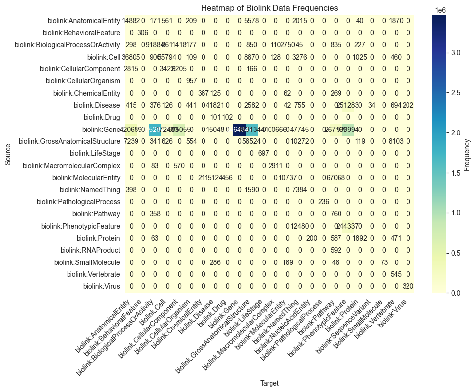

Monarch-KG notebook
[5]:
from linkml_store.api.client import Client
client = Client()
[6]:
from linkml_store.constants import LINKML_STORE_MODULE
MONARCH_KG_DB = "https://data.monarchinitiative.org/monarch-kg/latest/monarch-kg.db.gz"
path = LINKML_STORE_MODULE.ensure_gunzip(url=MONARCH_KG_DB, autoclean=True)
[7]:
path
[7]:
PosixPath('/Users/cjm/.data/linkml/store/monarch-kg.db')
[11]:
database = client.attach_database(f"duckdb:///{path}", "monarch-kg")
[14]:
edges_coll = database.get_collection("denormalized_edges")
[15]:
qr = edges_coll.find()
qr.rows_dataframe
[15]:
| aggregator_knowledge_source | category | evidence | frequency_qualifier | has_evidence | id | knowledge_source | negated | object | object_category | ... | qualifiers | relation | sex_qualifier | stage_qualifier | subject | subject_category | subject_closure | subject_closure_label | subject_label | subject_namespace | |
|---|---|---|---|---|---|---|---|---|---|---|---|---|---|---|---|---|---|---|---|---|---|
| 0 | urn:uuid:9d3db3b3-0e55-462f-9876-b125014e7a63 | CHEBI:100147 | biolink:MolecularEntity | ... | OBO:chebi | CHEBI:62070 | biolink:MolecularEntity | CHEBI:35757|CHEBI:62070 | monocarboxylic acid anion|nalidixic acid anion | nalidixic acid anion | CHEBI | ||||||||||
| 1 | urn:uuid:fbc60452-f951-4f81-8dcf-bcc20834e7ab | CHEBI:100241 | biolink:MolecularEntity | ... | OBO:chebi | CHEBI:192484 | biolink:MolecularEntity | CHEBI:27369|CHEBI:192484 | ciprofloxacin zwitterion|zwitterion | ciprofloxacin zwitterion | CHEBI | ||||||||||
| 2 | urn:uuid:fe862fe6-0ae3-4f83-97ec-39f1d7683a87 | CHEBI:100241 | biolink:MolecularEntity | ... | OBO:chebi | CHEBI:192486 | biolink:MolecularEntity | CHEBI:137419|CHEBI:192486 | secondary ammonium ion|ciprofloxacin(1+) | ciprofloxacin(1+) | CHEBI | ||||||||||
| 3 | urn:uuid:773f1b21-bf81-4208-ab59-448545ffe46b | Graph | CHEBI:10545 | biolink:ChemicalSubstance | ... | BFO:0000051 | CHEBI:33250 | biolink:ChemicalEntity | CHEBI:24431|CHEBI:33250 | chemical entity|atom | atom | CHEBI | |||||||||
| 4 | urn:uuid:83584793-1852-4166-9723-24287c85f136 | CHEBI:10642 | biolink:MolecularEntity | ... | OBO:chebi | CHEBI:27405 | biolink:MolecularEntity | CHEBI:24436|CHEBI:61689|CHEBI:27405 | guanidines|streptidine|amino cyclitol | streptidine | CHEBI | ||||||||||
| ... | ... | ... | ... | ... | ... | ... | ... | ... | ... | ... | ... | ... | ... | ... | ... | ... | ... | ... | ... | ... | ... |
| 95 | urn:uuid:2e2135d0-f67b-4f18-bf6d-363e2a70a42f | Graph | CHEBI:133135 | biolink:MolecularEntity | ... | rdfs:subClassOf | CHEBI:72579 | biolink:MolecularEntity | CHEBI:133135|CHEBI:72579 | chromenochromene|tetrahydrochromenochromene | tetrahydrochromenochromene | CHEBI | |||||||||
| 96 | urn:uuid:d93f9e52-2825-436b-91fb-97ea82d01a83 | Graph | CHEBI:133251 | biolink:MolecularEntity | ... | rdfs:subClassOf | CHEBI:17325 | biolink:MolecularEntity | CHEBI:133251|CHEBI:17325 | 3-hydroxydicarboxylate(2-)|3-hydroxy-3-methylg... | 3-hydroxy-3-methylglutarate(2-) | CHEBI | |||||||||
| 97 | urn:uuid:e1d4dc4d-3142-48cf-ba4d-1946638d61eb | Graph | CHEBI:133291 | biolink:MolecularEntity | ... | rdfs:subClassOf | CHEBI:15792 | biolink:MolecularEntity | CHEBI:133291|CHEBI:15792 | saturated dicarboxylic acid dianion(2-)|malona... | malonate(2-) | CHEBI | |||||||||
| 98 | urn:uuid:341fe57a-f81c-4e50-83d7-c755e74f48a1 | CHEBI:133294 | biolink:MolecularEntity | ... | OBO:chebi | CHEBI:36145 | biolink:MolecularEntity | CHEBI:35692|CHEBI:25754|CHEBI:36145 | oxo carboxylic acid|dicarboxylic acid|oxo dica... | oxo dicarboxylic acid | CHEBI | ||||||||||
| 99 | urn:uuid:40cd5ad8-e276-4e68-905a-0776fff6cb52 | CHEBI:133538 | biolink:MolecularEntity | ... | OBO:chebi | CHEBI:18019 | biolink:MolecularEntity | CHEBI:25094|CHEBI:22658|CHEBI:18019 | L-lysine|aspartate family amino acid|lysine | L-lysine | CHEBI |
100 rows × 31 columns
[19]:
key = ("subject_category", "object_category")
facets = edges_coll.query_facets(facet_columns=[key])
[22]:
import seaborn as sns
import matplotlib.pyplot as plt
import pandas as pd
def heatmap(data):
# Convert data into a DataFrame
df = pd.DataFrame(data, columns=['Source', 'Target', 'Value'])
# Pivot the data to create a matrix suitable for a heatmap
pivot_df = df.pivot(index='Source', columns='Target', values='Value').fillna(0)
# Plot the heatmap
plt.figure(figsize=(10, 8))
sns.heatmap(pivot_df, annot=True, fmt=".0f", cmap="YlGnBu", cbar_kws={'label': 'Frequency'})
plt.title("Heatmap of Biolink Data Frequencies")
plt.xticks(rotation=45, ha="right")
plt.yticks(rotation=0)
plt.tight_layout()
plt.show()
[23]:
heatmap(facets[key])

[ ]: